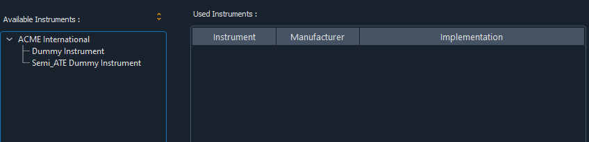
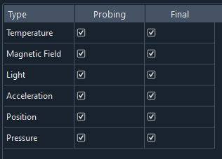

Semi-ATE Project Development
The development process of a Semi-ATE project requires a specific order of different configuration steps. This document will help to create and execute a test in a test program flow.
note: this document assumes that all project dependencies such as Semi-ATE Plugin, Tester Plugin, etc… are installed and configured (see semi-ate-packages)
Spyder Environment
Spyder is a plugin based IDE that Semi-ATE depends on and will be used to develop and debug tests.
Project Setup
Setting up the project shall be done in different sections/stages.
Definitions Section
All items under this section shall be configured at first to setup and build the base structure of the project.
| configuration | PR | FT |
|---|---|---|
| hardwaresetup | X | X |
| maskset | X | X |
| die | X | X |
| package | X | |
| device | X | |
| product | O |
Probing(PR)
Final Test(FT)
The table above provides the setup needed to develop tests in different test phases such as probing or final Test.
Hardware Setup
In this section, we will focus on how to configure a hardware setup to be able to use it to write test and run test programs.
The image above shows the view expected when creating/editing a hardware setup. A hardware setup contains different sections to be configured. Though, it’s not necessary to configure all of them. Therefore, for simplicity we will introduce optional and non-optional groups.
Optional
The optional sections are not necessary for the development of tests but are useful in some scenarios.
Instruments: During test execution available instruments that are accessed and controller via
mqttover ethernet.

note: instruments are plugin based components that must be installed manually (see Plugins for more information)
Actuators: more about actuators in ActuatorControl

Actuators may be selected for the different development phases and will be automatically integrated in the auto-generated code which will be used directly by the test.
Actuator are partially implemented so make sure to read documentation(ActuatorControl)
General Purpose Functions: helper interfaces that are used inside a test to provide a specific functionality like flatcache. Flatcache provides support for exchanging test results among different testers.
note: any selected component from Instruments, Actuators or General Purpose Functions will automatically be integrated in the generated code and can be accessed/used when implementing a test.
Non-Optional
Parallelism: describes the alignment the testing sites shall adapt while testing.
note: It should be at least one configuration available
In case of a single site:
In case of multi-sites:
Tester: the tester dropdown contains all installed tester plugins that implements the tester interface with which the test engineer may interact with the tester. (see Plugins for more information)
note: The PCBs section is not a part of this documentation.
the following sections are (not) part of the generated code
Maskset Die Package Device Productbut are necessary to develop in Semi-ATE environment.
Toolbar
The toolbar may be used to configure and filter the tree view such enabling or disabling some of the sections.

The toolbar provide a way to select the different configuration already defined in the definition section:
select the hardware setup
select the test phase PR or FT
select the target (e.g
diefor PR phase anddevicefor FT phase)hide/show groups
Tests Section
This section is only enabled if stage one is completed (e.g a configuration is generated and is selected using the Semi-ATE toolbar)

As seen above the test section is activated and below are the standard test groups where a test could be virtually located/grouped.

note: The test groups are only virtual (e.g. they do not exist physically in the file system).
Generate and Configure Tests
Filling the required fields and apply the configuration will generate a test that will be automatically appended to the tree.
The image below shows an example of test named contact for the engineering group.

Write Tests
Generating a test as described above will automatically generate code that may be used to write custom test code.
...
def do(self):
"""Default implementation for test."""
...
self.op.new_parameter1.default()
...
The test literally doesn’t do anything other than setting the output parameter to a default value.
The do function is basically all we need to write tests.
The test will be provided with a context objects which contains all available interfaces such as instruments/actuators/tester…
The context could be used as follow (more here):
self.context.tester.<operate_on_hardware>
note: Spyder-IDE will provide the auto completion support needed to select the corresponding members and functions.
note: operating on the tester may require tester specific knowledge.
Flows Section
The test programs will also be grouped in the same style as tests.

Creating or editing a test program will open the following wizard:

The created test program will be available under the corresponding group.
note: Unlike the test code the test program code shall never be edited as it contains all information to run the associated tests.
Toolbar Extension

note: The extension is not a part of the Semi-ATE Plugin.
Auto Script
The auto script is a hardware setup specific interface which is used by the test program to execute user code automatically.
The auto script has the following interface:
...
def before_start_setup(self):
pass
def after_cycle_teardown(self):
pass
def after_terminate_teardown(self):
pass
def after_exception_teardown(self, source: str, exception: Exception):
pass
The functions listed above will be executed automatically at the different test program execution stages, for instance:
before_start_setup: will be called once in the beginning of a test program start.after_cycle_teardown: will be called after running a complete test program flow.after_terminate_teardown: will be called when the unload command is received.after_exception_teardown: will be called when exceptions in a valid python code occur.